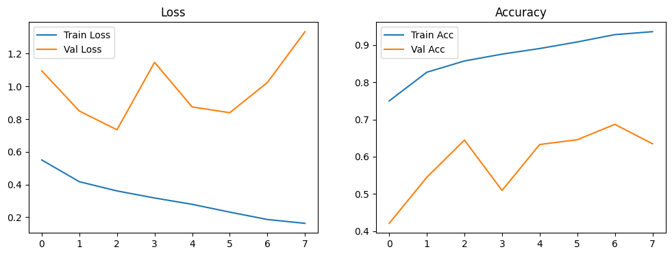
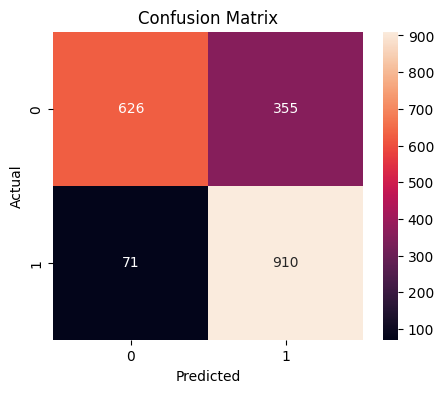

Modelling menggunakan arsitektur CNN 1D#
Menginstall lirary yang diperlukan#
!pip install tensorflow
Collecting tensorflow
Downloading tensorflow-2.20.0-cp312-cp312-manylinux_2_17_x86_64.manylinux2014_x86_64.whl.metadata (4.5 kB)
Collecting absl-py>=1.0.0 (from tensorflow)
Downloading absl_py-2.3.1-py3-none-any.whl.metadata (3.3 kB)
Collecting astunparse>=1.6.0 (from tensorflow)
Downloading astunparse-1.6.3-py2.py3-none-any.whl.metadata (4.4 kB)
Collecting flatbuffers>=24.3.25 (from tensorflow)
Downloading flatbuffers-25.9.23-py2.py3-none-any.whl.metadata (875 bytes)
Collecting gast!=0.5.0,!=0.5.1,!=0.5.2,>=0.2.1 (from tensorflow)
Downloading gast-0.7.0-py3-none-any.whl.metadata (1.5 kB)
Collecting google_pasta>=0.1.1 (from tensorflow)
Downloading google_pasta-0.2.0-py3-none-any.whl.metadata (814 bytes)
Collecting libclang>=13.0.0 (from tensorflow)
Downloading libclang-18.1.1-py2.py3-none-manylinux2010_x86_64.whl.metadata (5.2 kB)
Collecting opt_einsum>=2.3.2 (from tensorflow)
Downloading opt_einsum-3.4.0-py3-none-any.whl.metadata (6.3 kB)
Requirement already satisfied: packaging in /home/codespace/.python/current/lib/python3.12/site-packages (from tensorflow) (23.2)
Collecting protobuf>=5.28.0 (from tensorflow)
Downloading protobuf-6.33.2-cp39-abi3-manylinux2014_x86_64.whl.metadata (593 bytes)
Requirement already satisfied: requests<3,>=2.21.0 in /home/codespace/.local/lib/python3.12/site-packages (from tensorflow) (2.32.4)
Requirement already satisfied: setuptools in /home/codespace/.python/current/lib/python3.12/site-packages (from tensorflow) (68.2.2)
Requirement already satisfied: six>=1.12.0 in /home/codespace/.local/lib/python3.12/site-packages (from tensorflow) (1.17.0)
Collecting termcolor>=1.1.0 (from tensorflow)
Downloading termcolor-3.2.0-py3-none-any.whl.metadata (6.4 kB)
Requirement already satisfied: typing_extensions>=3.6.6 in /home/codespace/.local/lib/python3.12/site-packages (from tensorflow) (4.14.1)
Requirement already satisfied: wrapt>=1.11.0 in /home/codespace/.python/current/lib/python3.12/site-packages (from tensorflow) (1.17.3)
Collecting grpcio<2.0,>=1.24.3 (from tensorflow)
Downloading grpcio-1.76.0-cp312-cp312-manylinux2014_x86_64.manylinux_2_17_x86_64.whl.metadata (3.7 kB)
Collecting tensorboard~=2.20.0 (from tensorflow)
Downloading tensorboard-2.20.0-py3-none-any.whl.metadata (1.8 kB)
Collecting keras>=3.10.0 (from tensorflow)
Downloading keras-3.12.0-py3-none-any.whl.metadata (5.9 kB)
Requirement already satisfied: numpy>=1.26.0 in /home/codespace/.python/current/lib/python3.12/site-packages (from tensorflow) (1.26.4)
Collecting h5py>=3.11.0 (from tensorflow)
Downloading h5py-3.15.1-cp312-cp312-manylinux_2_27_x86_64.manylinux_2_28_x86_64.whl.metadata (3.0 kB)
Collecting ml_dtypes<1.0.0,>=0.5.1 (from tensorflow)
Downloading ml_dtypes-0.5.4-cp312-cp312-manylinux_2_27_x86_64.manylinux_2_28_x86_64.whl.metadata (8.9 kB)
Requirement already satisfied: charset_normalizer<4,>=2 in /home/codespace/.local/lib/python3.12/site-packages (from requests<3,>=2.21.0->tensorflow) (3.4.2)
Requirement already satisfied: idna<4,>=2.5 in /home/codespace/.local/lib/python3.12/site-packages (from requests<3,>=2.21.0->tensorflow) (3.10)
Requirement already satisfied: urllib3<3,>=1.21.1 in /home/codespace/.local/lib/python3.12/site-packages (from requests<3,>=2.21.0->tensorflow) (2.5.0)
Requirement already satisfied: certifi>=2017.4.17 in /home/codespace/.local/lib/python3.12/site-packages (from requests<3,>=2.21.0->tensorflow) (2025.7.9)
Collecting markdown>=2.6.8 (from tensorboard~=2.20.0->tensorflow)
Downloading markdown-3.10-py3-none-any.whl.metadata (5.1 kB)
Requirement already satisfied: pillow in /home/codespace/.python/current/lib/python3.12/site-packages (from tensorboard~=2.20.0->tensorflow) (10.4.0)
Collecting tensorboard-data-server<0.8.0,>=0.7.0 (from tensorboard~=2.20.0->tensorflow)
Downloading tensorboard_data_server-0.7.2-py3-none-manylinux_2_31_x86_64.whl.metadata (1.1 kB)
Requirement already satisfied: werkzeug>=1.0.1 in /home/codespace/.python/current/lib/python3.12/site-packages (from tensorboard~=2.20.0->tensorflow) (3.1.3)
Requirement already satisfied: wheel<1.0,>=0.23.0 in /home/codespace/.python/current/lib/python3.12/site-packages (from astunparse>=1.6.0->tensorflow) (0.45.1)
Requirement already satisfied: rich in /home/codespace/.python/current/lib/python3.12/site-packages (from keras>=3.10.0->tensorflow) (13.9.4)
Collecting namex (from keras>=3.10.0->tensorflow)
Downloading namex-0.1.0-py3-none-any.whl.metadata (322 bytes)
Collecting optree (from keras>=3.10.0->tensorflow)
Downloading optree-0.18.0-cp312-cp312-manylinux_2_27_x86_64.manylinux_2_28_x86_64.whl.metadata (34 kB)
Requirement already satisfied: MarkupSafe>=2.1.1 in /home/codespace/.local/lib/python3.12/site-packages (from werkzeug>=1.0.1->tensorboard~=2.20.0->tensorflow) (3.0.2)
Requirement already satisfied: markdown-it-py>=2.2.0 in /home/codespace/.python/current/lib/python3.12/site-packages (from rich->keras>=3.10.0->tensorflow) (3.0.0)
Requirement already satisfied: pygments<3.0.0,>=2.13.0 in /home/codespace/.local/lib/python3.12/site-packages (from rich->keras>=3.10.0->tensorflow) (2.19.2)
Requirement already satisfied: mdurl~=0.1 in /home/codespace/.python/current/lib/python3.12/site-packages (from markdown-it-py>=2.2.0->rich->keras>=3.10.0->tensorflow) (0.1.2)
Downloading tensorflow-2.20.0-cp312-cp312-manylinux_2_17_x86_64.manylinux2014_x86_64.whl (620.7 MB)
━━━━━━━━━━━━━━━━━━━━━━━━━━━━━━━━━━━━━━━━ 620.7/620.7 MB 17.9 MB/s 0:00:17m0:00:0100:01
?25hDownloading grpcio-1.76.0-cp312-cp312-manylinux2014_x86_64.manylinux_2_17_x86_64.whl (6.6 MB)
━━━━━━━━━━━━━━━━━━━━━━━━━━━━━━━━━━━━━━━━ 6.6/6.6 MB 43.2 MB/s 0:00:00
?25hDownloading ml_dtypes-0.5.4-cp312-cp312-manylinux_2_27_x86_64.manylinux_2_28_x86_64.whl (5.0 MB)
━━━━━━━━━━━━━━━━━━━━━━━━━━━━━━━━━━━━━━━━ 5.0/5.0 MB 45.8 MB/s 0:00:00
?25hDownloading tensorboard-2.20.0-py3-none-any.whl (5.5 MB)
━━━━━━━━━━━━━━━━━━━━━━━━━━━━━━━━━━━━━━━━ 5.5/5.5 MB 48.7 MB/s 0:00:00
?25hDownloading tensorboard_data_server-0.7.2-py3-none-manylinux_2_31_x86_64.whl (6.6 MB)
━━━━━━━━━━━━━━━━━━━━━━━━━━━━━━━━━━━━━━━━ 6.6/6.6 MB 65.1 MB/s 0:00:00
?25hDownloading absl_py-2.3.1-py3-none-any.whl (135 kB)
Downloading astunparse-1.6.3-py2.py3-none-any.whl (12 kB)
Downloading flatbuffers-25.9.23-py2.py3-none-any.whl (30 kB)
Downloading gast-0.7.0-py3-none-any.whl (22 kB)
Downloading google_pasta-0.2.0-py3-none-any.whl (57 kB)
Downloading h5py-3.15.1-cp312-cp312-manylinux_2_27_x86_64.manylinux_2_28_x86_64.whl (5.1 MB)
━━━━━━━━━━━━━━━━━━━━━━━━━━━━━━━━━━━━━━━━ 5.1/5.1 MB 39.0 MB/s 0:00:00
?25hDownloading keras-3.12.0-py3-none-any.whl (1.5 MB)
━━━━━━━━━━━━━━━━━━━━━━━━━━━━━━━━━━━━━━━━ 1.5/1.5 MB 36.6 MB/s 0:00:00
?25hDownloading libclang-18.1.1-py2.py3-none-manylinux2010_x86_64.whl (24.5 MB)
━━━━━━━━━━━━━━━━━━━━━━━━━━━━━━━━━━━━━━━━ 24.5/24.5 MB 43.1 MB/s 0:00:006m0:00:01
?25hDownloading markdown-3.10-py3-none-any.whl (107 kB)
Downloading opt_einsum-3.4.0-py3-none-any.whl (71 kB)
Downloading protobuf-6.33.2-cp39-abi3-manylinux2014_x86_64.whl (323 kB)
Downloading termcolor-3.2.0-py3-none-any.whl (7.7 kB)
Downloading namex-0.1.0-py3-none-any.whl (5.9 kB)
Downloading optree-0.18.0-cp312-cp312-manylinux_2_27_x86_64.manylinux_2_28_x86_64.whl (408 kB)
Installing collected packages: namex, libclang, flatbuffers, termcolor, tensorboard-data-server, protobuf, optree, opt_einsum, ml_dtypes, markdown, h5py, grpcio, google_pasta, gast, astunparse, absl-py, tensorboard, keras, tensorflow
Attempting uninstall: protobuf90m━━━━━━━━━━━━━━━━━━━━━━━━━━━━━━━ 4/19 [tensorboard-data-server]
Found existing installation: protobuf 4.25.8━━━━━━━━━━━━━━ 4/19 [tensorboard-data-server]
Uninstalling protobuf-4.25.8:━━━━━━━━━━━━━━━━━━━━━━━━━━━━━ 4/19 [tensorboard-data-server]
Successfully uninstalled protobuf-4.25.8━━━━━━━━━━━━━━━━ 4/19 [tensorboard-data-server]
━━━━━━━━━━━━━━━━━━━━━━━━━━━━━━━━━━━━━━━━ 19/19 [tensorflow]9 [tensorflow]]-server]
Successfully installed absl-py-2.3.1 astunparse-1.6.3 flatbuffers-25.9.23 gast-0.7.0 google_pasta-0.2.0 grpcio-1.76.0 h5py-3.15.1 keras-3.12.0 libclang-18.1.1 markdown-3.10 ml_dtypes-0.5.4 namex-0.1.0 opt_einsum-3.4.0 optree-0.18.0 protobuf-6.33.2 tensorboard-2.20.0 tensorboard-data-server-0.7.2 tensorflow-2.20.0 termcolor-3.2.0
Mengimport Library yang diperlukan#
import numpy as np
import tensorflow as tf
from tensorflow.keras.models import Sequential
from tensorflow.keras.layers import Conv1D, MaxPooling1D, Flatten, Dense, Dropout
from tensorflow.keras.utils import to_categorical
from sklearn.preprocessing import LabelEncoder
from sklearn.metrics import classification_report, confusion_matrix
2025-12-14 13:38:05.712038: I external/local_xla/xla/tsl/cuda/cudart_stub.cc:31] Could not find cuda drivers on your machine, GPU will not be used.
2025-12-14 13:38:05.760230: I tensorflow/core/platform/cpu_feature_guard.cc:210] This TensorFlow binary is optimized to use available CPU instructions in performance-critical operations.
To enable the following instructions: AVX2 FMA, in other operations, rebuild TensorFlow with the appropriate compiler flags.
2025-12-14 13:38:08.483208: I external/local_xla/xla/tsl/cuda/cudart_stub.cc:31] Could not find cuda drivers on your machine, GPU will not be used.
Membaca File .ts#
def read_ts_file(file_path):
data = []
labels = []
is_data_section = False
with open(file_path, "r") as f:
for line in f:
line = line.strip()
# Mulai membaca setelah @data
if line.lower() == "@data":
is_data_section = True
continue
if not is_data_section:
continue
# Pisahkan nilai dan label
if ":" in line:
values, label = line.split(":")
series = [float(x) for x in values.split(",") if x != ""]
data.append(series)
labels.append(label)
return data, labels
Load File Train dan Test#
train_path = "RightWhaleCalls/RightWhaleCalls_TRAIN.ts"
test_path = "RightWhaleCalls/RightWhaleCalls_TEST.ts"
X_train, y_train = read_ts_file(train_path)
X_test, y_test = read_ts_file(test_path)
print("File loaded successfully!")
File loaded successfully!
Konversi Data ke NumPy Array#
X_train_np = np.array(X_train)
X_test_np = np.array(X_test)
print("Shape sebelum reshape:", X_train_np.shape)
Shape sebelum reshape: (9324, 4000)
Normalisasi#
import numpy as np
def normalize_per_sample(X):
X_norm = []
for ts in X:
ts = np.array(ts)
ts = (ts - ts.mean()) / (ts.std() + 1e-8)
X_norm.append(ts)
return np.array(X_norm)
X_train_np = normalize_per_sample(X_train_np)
X_test_np = normalize_per_sample(X_test_np)
Reshape Untuk CNN 1D#
X_train_np = X_train_np[..., np.newaxis]
X_test_np = X_test_np[..., np.newaxis]
print("Shape sesudah reshape:", X_train_np.shape)
Shape sesudah reshape: (9324, 4000, 1)
Encoding Label#
encoder = LabelEncoder()
y_train_enc = encoder.fit_transform(y_train)
y_test_enc = encoder.transform(y_test)
# One-hot encoding
y_train_cat = to_categorical(y_train_enc)
y_test_cat = to_categorical(y_test_enc)
print("Contoh label asli :", y_train[:5])
print("Contoh label encode :", y_train_enc[:5])
Contoh label asli : ['1', '1', '1', '1', '1']
Contoh label encode : [1 1 1 1 1]
Membangun Model CNN 1D#
from tensorflow.keras.models import Sequential
from tensorflow.keras.layers import Conv1D, MaxPooling1D, Flatten, Dense, Dropout
model = Sequential([
Conv1D(32, kernel_size=5, activation='relu', input_shape=(X_train_np.shape[1], 1)),
MaxPooling1D(2),
Dropout(0.3),
Conv1D(64, kernel_size=5, activation='relu'),
MaxPooling1D(2),
Dropout(0.3),
Flatten(),
Dense(64, activation='relu'),
Dropout(0.4),
Dense(2, activation='softmax')
])
model.compile(
optimizer='adam',
loss='categorical_crossentropy',
metrics=['accuracy']
)
/usr/local/python/3.12.1/lib/python3.12/site-packages/keras/src/layers/convolutional/base_conv.py:113: UserWarning: Do not pass an `input_shape`/`input_dim` argument to a layer. When using Sequential models, prefer using an `Input(shape)` object as the first layer in the model instead.
super().__init__(activity_regularizer=activity_regularizer, **kwargs)
2025-12-14 13:39:31.538095: E external/local_xla/xla/stream_executor/cuda/cuda_platform.cc:51] failed call to cuInit: INTERNAL: CUDA error: Failed call to cuInit: UNKNOWN ERROR (303)
Menggunakan learning rate yang kecil#
from tensorflow.keras.optimizers import Adam
model.compile(
optimizer=Adam(learning_rate=0.0005),
loss='categorical_crossentropy',
metrics=['accuracy']
)
Early Stopping#
from tensorflow.keras.callbacks import EarlyStopping
early_stopping = EarlyStopping(
monitor='val_loss',
patience=5, # sebelumnya 3 terlalu cepat
restore_best_weights=True
)
Model Checkpoint#
from tensorflow.keras.callbacks import ModelCheckpoint
checkpoint = ModelCheckpoint(
"best_cnn1d_model.keras",
monitor="val_loss",
save_best_only=True,
verbose=1
)
history = model.fit(
X_train_np,
y_train_cat,
epochs=12, # batas maksimum
batch_size=32, # aman & stabil
validation_split=0.2,
callbacks=[early_stopping, checkpoint],
verbose=1
)
Epoch 1/12
2025-12-14 13:39:47.374711: W external/local_xla/xla/tsl/framework/cpu_allocator_impl.cc:84] Allocation of 119344000 exceeds 10% of free system memory.
233/234 ━━━━━━━━━━━━━━━━━━━━ 0s 189ms/step - accuracy: 0.7113 - loss: 0.7038
Epoch 1: val_loss improved from None to 1.09536, saving model to best_cnn1d_model.keras
234/234 ━━━━━━━━━━━━━━━━━━━━ 48s 200ms/step - accuracy: 0.7500 - loss: 0.5501 - val_accuracy: 0.4209 - val_loss: 1.0954
Epoch 2/12
233/234 ━━━━━━━━━━━━━━━━━━━━ 0s 176ms/step - accuracy: 0.8201 - loss: 0.4256
Epoch 2: val_loss improved from 1.09536 to 0.84919, saving model to best_cnn1d_model.keras
234/234 ━━━━━━━━━━━━━━━━━━━━ 79s 187ms/step - accuracy: 0.8269 - loss: 0.4171 - val_accuracy: 0.5448 - val_loss: 0.8492
Epoch 3/12
233/234 ━━━━━━━━━━━━━━━━━━━━ 0s 190ms/step - accuracy: 0.8576 - loss: 0.3614
Epoch 3: val_loss improved from 0.84919 to 0.73470, saving model to best_cnn1d_model.keras
234/234 ━━━━━━━━━━━━━━━━━━━━ 47s 201ms/step - accuracy: 0.8572 - loss: 0.3608 - val_accuracy: 0.6445 - val_loss: 0.7347
Epoch 4/12
233/234 ━━━━━━━━━━━━━━━━━━━━ 0s 169ms/step - accuracy: 0.8728 - loss: 0.3183
Epoch 4: val_loss did not improve from 0.73470
234/234 ━━━━━━━━━━━━━━━━━━━━ 76s 178ms/step - accuracy: 0.8756 - loss: 0.3176 - val_accuracy: 0.5094 - val_loss: 1.1470
Epoch 5/12
233/234 ━━━━━━━━━━━━━━━━━━━━ 0s 174ms/step - accuracy: 0.8919 - loss: 0.2754
Epoch 5: val_loss did not improve from 0.73470
234/234 ━━━━━━━━━━━━━━━━━━━━ 84s 185ms/step - accuracy: 0.8906 - loss: 0.2788 - val_accuracy: 0.6327 - val_loss: 0.8743
Epoch 6/12
233/234 ━━━━━━━━━━━━━━━━━━━━ 0s 169ms/step - accuracy: 0.9091 - loss: 0.2309
Epoch 6: val_loss did not improve from 0.73470
234/234 ━━━━━━━━━━━━━━━━━━━━ 81s 180ms/step - accuracy: 0.9083 - loss: 0.2311 - val_accuracy: 0.6456 - val_loss: 0.8392
Epoch 7/12
233/234 ━━━━━━━━━━━━━━━━━━━━ 0s 169ms/step - accuracy: 0.9267 - loss: 0.1918
Epoch 7: val_loss did not improve from 0.73470
234/234 ━━━━━━━━━━━━━━━━━━━━ 82s 179ms/step - accuracy: 0.9280 - loss: 0.1860 - val_accuracy: 0.6869 - val_loss: 1.0237
Epoch 8/12
233/234 ━━━━━━━━━━━━━━━━━━━━ 0s 174ms/step - accuracy: 0.9394 - loss: 0.1586
Epoch 8: val_loss did not improve from 0.73470
234/234 ━━━━━━━━━━━━━━━━━━━━ 83s 184ms/step - accuracy: 0.9359 - loss: 0.1626 - val_accuracy: 0.6349 - val_loss: 1.3346
import matplotlib.pyplot as plt
plt.figure(figsize=(12,4))
plt.subplot(1,2,1)
plt.plot(history.history['loss'], label='Train Loss')
plt.plot(history.history['val_loss'], label='Val Loss')
plt.legend()
plt.title('Loss')
plt.subplot(1,2,2)
plt.plot(history.history['accuracy'], label='Train Acc')
plt.plot(history.history['val_accuracy'], label='Val Acc')
plt.legend()
plt.title('Accuracy')
plt.show()

test_loss, test_acc = model.evaluate(X_test_np, y_test_cat, verbose=0)
print(f"Akurasi Data TEST: {test_acc:.4f}")
Akurasi Data TEST: 0.7829
y_pred = model.predict(X_test_np)
y_pred_classes = np.argmax(y_pred, axis=1)
print(classification_report(y_test_enc, y_pred_classes, target_names=encoder.classes_))
62/62 ━━━━━━━━━━━━━━━━━━━━ 3s 50ms/step
precision recall f1-score support
0 0.90 0.64 0.75 981
1 0.72 0.93 0.81 981
accuracy 0.78 1962
macro avg 0.81 0.78 0.78 1962
weighted avg 0.81 0.78 0.78 1962
import matplotlib.pyplot as plt
import seaborn as sns
cm = confusion_matrix(y_test_enc, y_pred_classes)
plt.figure(figsize=(5,4))
sns.heatmap(cm, annot=True, fmt='d',
xticklabels=encoder.classes_,
yticklabels=encoder.classes_)
plt.xlabel("Predicted")
plt.ylabel("Actual")
plt.title("Confusion Matrix")
plt.show()
